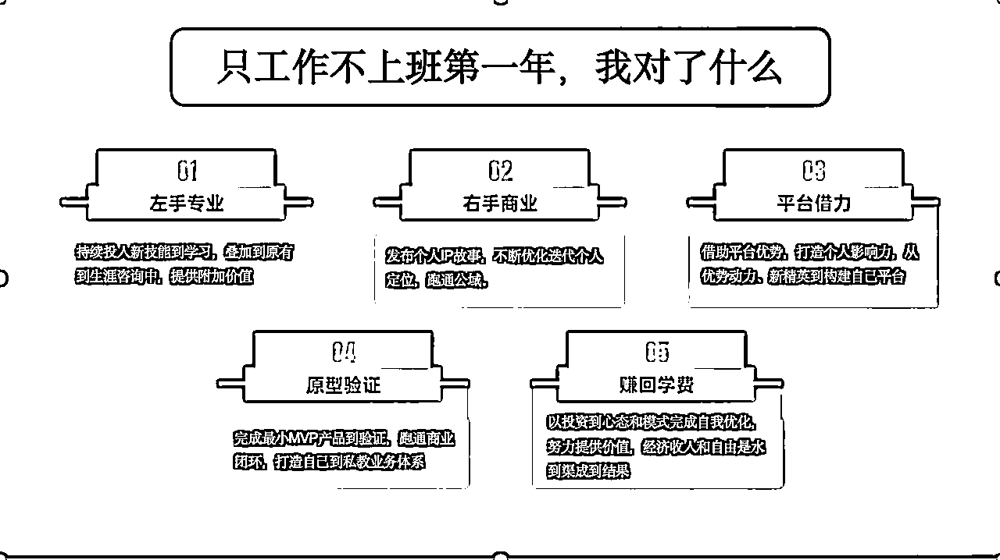
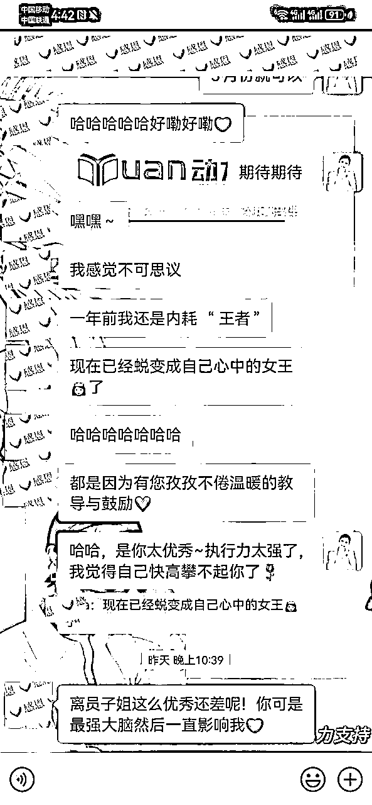
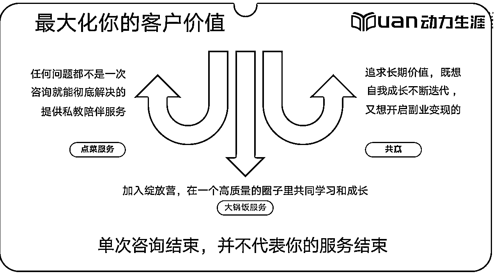
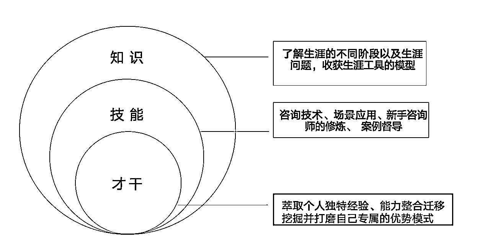
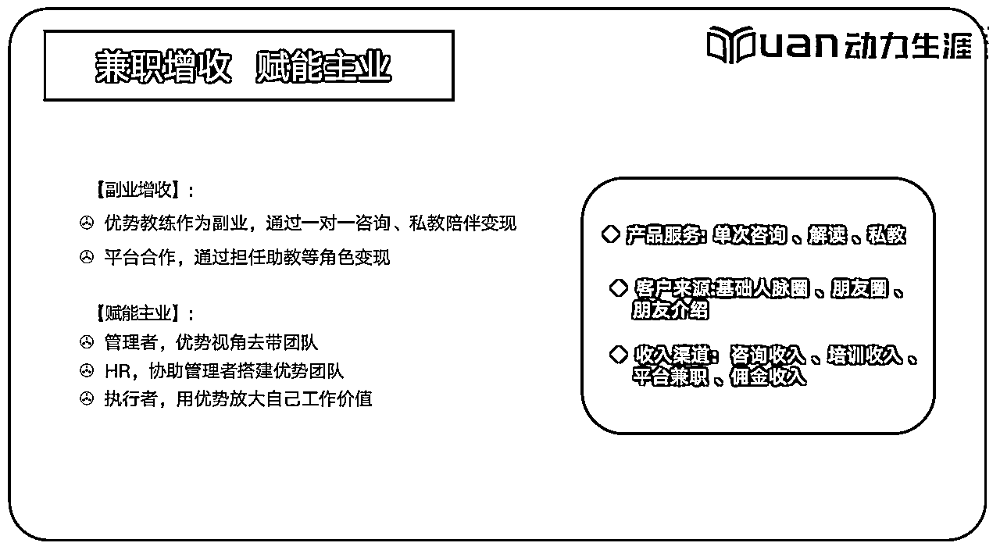
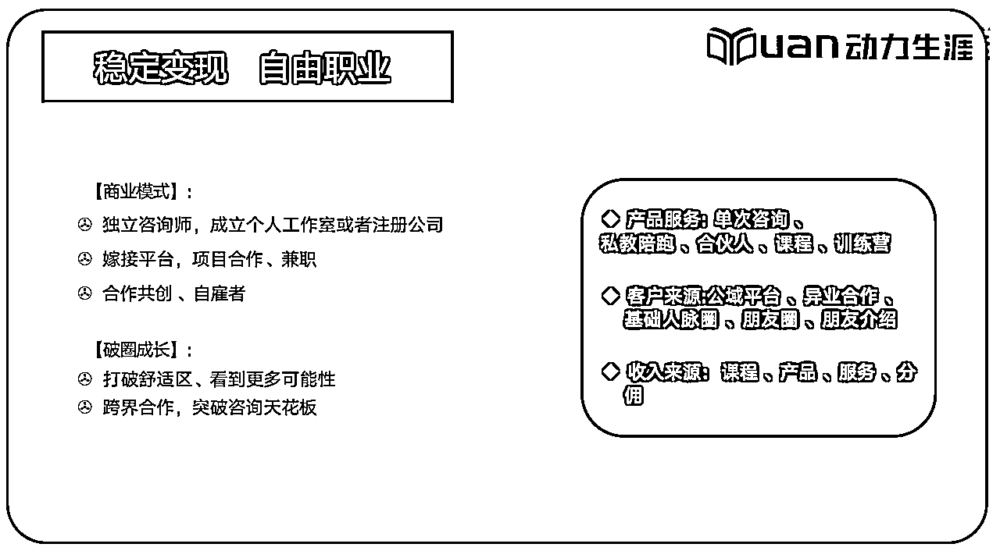

来源：https://gulggw6ggu.feishu.cn/docx/CtwYd2JIlo6fMnxKHxQcy2x7nNh
哈喽大家好，我是员子姐。
2023年2月成为靠谱的人，只工作不上班的第一年营收突破50谱，也让我找到了发挥优势的商业模式。
现在的我可以骄傲的和每个人说，我把自己活成了最好的成功案例。
简单做个自我介绍。
我从2018年自己遭遇职业瓶颈，开始学习生涯规划，在职业生涯规划领域深耕了7年，是国家认证职业生涯规划师、盖洛普全球认证优势教练，结构化复盘高级教练。2023年开始担任生涯规划行业头部公司新精英生涯的基石班促动师、职业突破营签约带教老师；优势动力创富合伙人、粥左罗顶峰会成员。
13年职场经历，3⃣️次零基础跨行业转型成功经历。当过大学老师、混过体制、体验过互联网、组建过高科技公司。目前专注为职场人/自由职业/轻创业者提供精准的个人优势定位解决方案，让你主业能突破、转型有方向、副业有机会。
目前已积累辅导400+职场人，咨询时长500+，带领100+新手咨询师成长，打通商业闭环。
我能提供：
1⃣️为职场人，规划晋升路径，实现升职加薪、副业变现；
2⃣️为创业者，找到专属的优势模式，十倍放大个人势能；
3⃣️为咨询师，提供发展路径规划，打通商业闭环；
2023年是我只工作不上班的第一年，收了18个合伙人，做了100+的个案辅导。在自由职业第二个月收入就突破了五位数，全年营收50w+。
每天工作3-5个小时，其他时间全部都可以自由支配，周末的亲子游、日常的健身、陪伴父母、错峰旅游、闺蜜小聚等等。
不用因为孩子、父母生病而不好意思和领导频繁请假，也不会因为加班错过了学校的亲子活动、自责懊恼，总之生活的掌控权牢牢的掌握在自己的手中，这种感觉太美好了。
身边很多朋友都会羡慕我目前的状态，也会好奇我是如何做到的。
今天我就和大家分享一下，我在生涯规划这条路上的成长路径，以及一些价值5位数的建议，应该能对大家有所帮助。
先给大家看一张图，这是我过去一年的5个心法吧～

今天呢，我重点从以下四个方面分享
1、如何用复盘思维增强优势，精准定位
2、打破一对一咨询天花板， 实现4位数/时
3、自由创富的生涯规划师、优势教练的成长路径
4、给想进入这个赛道伙伴的建议
很多人副业无法起步，就卡在了定位阶段，一是选择太少，不知道自己能做什么；二是选择太多，觉得自己什么都能做。
好吧，员子姐就是第二种。
在过去几年，我一直是处于自我探索的阶段。说是自我探索其实就是不断地 学习和考证，除了上面👆🏻提到的生涯规划师、优势教练、复盘教练。其实我还有很多其他标签，高考志愿填报师、职业发展管理师、讲书教练、人偶心游解读师、数字天赋咨询师等等。
所以，在我去年刚开启自由职业的时候，我也迷茫，选不出定位，能做的太多，哪个领域都不想舍弃。纠结再三， 我决定从自己熟悉的领域开始，复盘教练、生涯规划和高考志愿填报（高中生学业规划）是我最初选定的方向。从最初的方向到现在清晰的定位，这中间我也是走了弯路、踩过一些坑，幸运的是每次都能及时复盘，并且向靠谱求助，才能快速的调整策略。
分享三个做定位的原则+一个公式
因为我是结构化复盘的受益者，我自己学完复盘，在入职互联网公司6个月就直接晋升到管理层。所以我一直有个做复盘课程的执念，但是我被现实狠狠的打脸了。
2023年一月份，我做了一期高效复盘心法的训练营，勉强达成目标收了10个学员，但是课程效果并没有达到预期。给课程合伙人分完钱后，2023年1月份我的收入是1500元。
这次尝试后我也做了复盘：
1、前期没有任何的市场调研，不了解需求，人人喊复盘但是不见得人人都有学习复盘的刚需。
2、用户的需求也不是单纯的学习复盘，而是学习复盘能够带来的价值。自己并没有挖掘到用户的需求痛点，只是说自己的课程好。
3、没有流量不会写营文案。当时在朋友圈做了推广，觉得只要自己的课程有价值，就会有很多人来报名。
这次尝试也让我意识到，自己被执念带偏了，真正能让我们改变的是南墙。
高中生学业规划和高考志愿填报近几年来的需求很大，而且客单价高，有非常多的从业者涌入。我当时学习高考志愿填报，也是看重了这一点。
2023年的2月1日我收到第一个私教，是给一位高一的学生做选科辅导。说实话，早上醒过来收到钱的感觉超级爽，但是交付的过程真的是快把我的能量耗尽了。
当服务对象和付款对象不一致时，沟通成本极高。父母是付款者总是试图通过咨询师来了解孩子的内心世界，而作为咨询师，我们又必须遵守保密原则。孩子做为交付对象，为了能够让他们完全的打开自己，真诚的沟通，我们又必须尊重和理解他们。这个过程中，分寸的把握和高情商的处理也是有难度的。
而且和孩子的一小时辅导可能伴随着家长在微信上无穷无尽的提问。
我的盖洛普是是影响力+战略思维领域突出，我没有足够的耐心去应对这样长时间的沟通。同时我的【沟通】【取悦】靠后，不断的沟通也是对我能量的消耗。
于是在这次尝试后，我果断地调整了服务范围，不再接高客单的学业规划和高考志愿填报的全案辅导，只做单次的咨询。虽然客单价降了很多，但是交付也轻了很多。
因为我自己有三次跨行业转型的经历，所以我会吸引到很多想转型的来访者。同时，因为经历多了，面对这样诉求的来访者，我做起辅导来也更加的得心应手，于是我的定位就是给职场人做基于优势的职业转型。
但是，很快问题来了。我在做公域的时候发现，职业转型这个赛道很难找到对标的，也很难获客。大家的诉求都是求职辅导、面试辅导、简历修改，我开始怀疑是自己找对标的方法不对，还是真的就是没有呢。
遇到卡点，第一时间必须向专业的人求助。我和靠谱打了电话咨询这个问题，不愧是靠谱，一下子就打破了我的思维局限。
事实上， 我只关注自身，而忽略了外部环境的变化。去年的整体大环境就是企业都在降本增效，职场中年人能保住碗饭不被裁掉就是万幸，都在想着如何做副业挣更多的钱，而不是从0开始追求所谓的热爱。
于是根据市场需求的变化，我又将定位调整为专注于帮助职场人、自由职业者和轻创业者找到个人发展的突破点，找到主业升职加薪的发力点，还是在保持主业稳定的同时探索副业，或者是利用自身优势成为自由职业者。
这里我将职业规划+优势定位+复盘执行三者结合，用一套职业测评+一份优势测评+一份报告帮助来访者找到找准主业方面、明确副业机会。
这里也分享一个做职业定位的公式（同样适用副业定位）
我要帮助（），解决（）问题，创造（）的价值，收获（）回报
在调整了定位后，我也通过学员的成功案例验证了这个模式。
我早期的一位学员是餐饮行业从业者，她最开始受职场关系不和谐的影响，想要跳槽到另外一家主题餐厅做店长而找到我辅导。在辅导的过程中，我结合她的盖洛普优势报告发现，职场关系不和谐源自于内耗三件套（和谐+体谅+适应），关系突出+个别才干，她可以很好的发现顾客的差异化需求并提供温馨的服务；沟通突出，语言表达和文字中都充满了坚毅的力量。
于是我就给她制定了维稳主业+副业探索的个人突破路径，主业层面提升学历、学习西餐知识，向私人管家方面探索；副业层面学习写作。
经历5个月的刻意练习，她的写作副业取得突破，接连上稿读者，拿到了稿费。内耗三件套带来的情绪问题，也在一次又一次的复盘中得到了很好的管理。学历提升方面，也是顺利通过了考核，拿到了入学通知书。
前两天她和我聊天，说一年前的自己还陷入内耗三件套的巨大漩涡里面，没想到一年后活成了自己心中的女王。

在验证的过程中，我自身也敏锐的觉察到。我的盖洛普优势全部都得到了发挥，搜集让我能够获得大量的信息、战略让我能够把来访者匹配最优成长路径，统率也能让我帮助来访者更果断的做决策并推动他们成长。
所以你看，定位不是大仙指路，而是我们在不断的探索、尝试和验证中一步一步明确的。
而且在做定位探索的时候，我们要对内保持聚焦，对外保持敏锐。
对内聚焦就是明确自己的基本盘，根据自己过往的经验、自己的知识技能和拥有的资源来确定✅，像我的基本盘就是做生涯咨询，然后让自己保持在专业的状态，不断的提高帮助用户解决问题的能力。
对外保持敏锐，就是要关注市场的需求和变化，像靠谱经常说的，要去做离钱近的事情，想要变现就不能闭门造车，一定要了解市场的变化。
2023年我陪伴了100+多位新手咨询师成长，很多新手咨询师的认知中做咨询变现就是单次咨询或案例咨询，或者做做课程、培训之类的。
说实话，新手阶段的时候，我也是这样认为的。
但是跟着靠谱、在玩赚学习浸泡久了，从很多优秀的合伙人身上我也学到了一些产品设计的模式。
我的盖洛普优势【战略】才干是第三，不仅能给来访者找到最佳发展路径，在自己业务发展中，我也能快速的学习和借鉴其他合伙人好的模式。
我们先来做道数学题
很多想进入生涯规划、心理咨询、优势教练、高考志愿填报领域的伙伴，最开始能做到月入过万就是满足期待的。
那我们可以看到，不同客单价，想做到月入过万，需要成交的客户数量。事实上对于大部分起步阶段的咨询师，客单价在99-499之间，那么你一个月至少需要成交20个客户，才能实现月入10000。
假设你的成交转化率是10%，那你一个月需要谈单200人哦。
那我们看看，如果你的客单价是5000元，你一个月只需要谈20单，平均每天不到2个人就可以达成目标。
看到这里，你可能会说5000的客单价，像我们这样的水平不太现实吧。的确不现实，但是你用对了方法是可以达成的。
这就需要我们有高客单的产品作为一对一咨询后续的承接，这个高客单产品可以是你自己的，也可以是你认可的其他人的产品。
作为生涯规划师，我辅导过几百位来访者，但是我发现很多人在做完一次咨询后，就消失在茫茫人海了。然后我就需要不断的不断的去找客户，一次又一次的去做一对一的辅导。

利用销冠思维，我开始尝试在一对一咨询的结尾增加了一些小建议（钩子），做过咨询辅导的都知道，一般咨询都是解决某个具体的咨询目标，结束后咨询师也会让来访者说一下下一步的行动计划。
这个环节就非常适合去做一波转化，比如社群、高客单的私教、合伙人产品等。
因为我接触的很多职场人，对于社群、私教、合伙人这样的名称不太理解，我就用了一个吃饭的比喻。
私教，就像你请了一个专业的厨子，你只要告诉ta你想吃什么就可以，买原材料、制作、洗碗收拾这些通通都不需要你，给你的一套量身制作的方案和全程的陪伴。
社群，就更像于吃食堂，有一定的选择，但不能点菜，有啥吃啥，明明你今天想吃个水煮鱼，但是今天只有水煮肉片。
自我探索呢，就是自己买菜回家做。你想吃啥都可以，但是从买原材料，到制作烹饪，到吃完的洗碗收拾，全都是你自己，做的好不好吃，能不能满足你的味蕾，那就另当别论了。
上面这种方法适用于找自己的优势、找自己适合的发展方向的、求职等等的场景。
那对于咨询后，方向已经很清晰的来访者，我会直接给建议，告诉他你想走的这个方向我有资源、我有很好的课程，而且我自己也是受益者，让我来给你介绍一下。
比如有些来访者是实体店的经营者，想从线下转到线上做IP营销，我就推荐了玩赚合伙人；
有些来访者就是成为和我一样的优势教练， 我就推荐到苏姐的创富计划合伙人；
有些来访者想深耕写作，我就会推荐粥左罗的顶峰会；
总之，我会根据每个人自己的诉求以及他们的天赋优势，推荐和他们匹配的后端高客单产品。
用这个方式，我在3个月内成交了9个高客单合伙人.
所以，同样的一个小时的咨询，我把它从800元的价格，放大到3000、5000甚至8000的价值。
受玩赚合伙人模式和靠谱产品体系的启发，我也利用乐高模块优化了自己的产品体系。
对于大部分生涯规划师，出售的都是自己的时间，那么在同质化产品严重的情况下，我们如何才能做到脱颖而出呢~
就是给自己的产品增加附加值
举个例子：
同样做生涯咨询，价格差不多，但是购买我的咨询额外赠送一个陪伴群；
同样的私教体制，我会赠送一年期的玩赚新媒会员或者是朋友圈变现课，毕竟这个时代大家都想了解一些自媒体副业的渠道，这个点就吸引了很多用户。
此外在分销其他高客单的产品时，我也会额外赠送个人的优势辅导、生涯规划咨询、全套的职业测评等等。
作为咨询师，我们不仅要有专业的咨询能力，也有要商业认知，优秀的商业认知才是拉开收入差距的核心。
这里分享一个零基础小白，成长为能够变现的咨询师的成长路径
对于新手咨询师来说，这个阶段重点就是学习知识。
知识证书，是你获得客户认可的背书。
在我们还没案例积累的时候，专业认证的标签就是个保证。
这个阶段一般需要花费3个月左右的时间，但是这只是学习的结束，同时也是你开启生涯规划师之路的起点。
这个阶段最大的卡点就是敢于开启自己的咨询。23年我带了六期新手咨询师，陪伴100+新手咨询师成长。这个过程中最难的不是敢于给自己定价，反而是开启自己的第一次咨询。
很多新手咨询师都会担心自己技术不够，害怕咨询解决不了来访者的问题，担心来访者觉得没有收获，给自己的打分低等等
这里想澄清的一点就是，生涯规划师的站位是引导者，和我们做自媒体导师、商业咨询师的区别就是，我们不需要知道来访者问题的答案，我们是通过引导的方式带着ta换个视角重新看待遇到的问题，然后自己找到了解决问题的突破口。
在学习精进阶段分享几个点：

学习阶段的案源哪里来
案源也就是流量，是很多咨询师最大的卡点了。
在发展阶段，很多咨询师都是主副业并行的状态，前期收入一定是不稳定的，我不建议大家上来就全职做哈。
这里可以去和一些平台合作，担任班班、助教、带教老师这样的角色，一是能够获得稳定的案源提升专业技能，同时也是给自己积累案例做好专业背书。
这个阶段的核心就是在不断的实践中去提升和修炼自己的专业技能，在获客层面还是以私域、社群为主，有精力或者能力的话可以开始做公域。
咨询和教练技能，和医生、律师很像，是一个经验越丰富、收入可能就越高的行业。但是技能层面，也是需要保持练习和手感的。
这里建议，每周至少要做一个咨询让自己保持专业的状态。
在开启公域的过程中，可以根据自己的擅长和平台的属性去做选择。总之，要选择一个能让自己坚持下去的方式，这个方面我做的就不太好。小红书爆了之后，发布笔记就有点懈怠，但是长尾效应特别好，持续的有流量过来。
所以，不管选择哪个平台，持续才是王道。

首先，能够走到这个阶段的咨询师不多。
我从18年开始学习生涯规划，每年参与新精英生涯培训的人就差不多2000+，能够坚持做咨询的师10%，能够稳定变现做成事业的5%左右。
很多人干劲十足的开始，没有案源、不敢收费、技能不行、解决不了问题等等等问题会不断的耗尽你的心力，只到你选择放弃。
所以说，自由职业是强者的游戏。
自由职业也是职业，需要你有更强的技能、更强的驱动力。
能够做到这个阶段的咨询师，专业技能都是很过硬的。变现渠道也更加丰富：
1、自己做IP，积累用户、获得案源
2、和专业的平台合作、项目制、导师制，只负责咨询交付的部分
3、和一些大佬合作，共同研发产品
4、带货、分销
这个阶段仍然可以去打造自己的差异化定位，根据市场的变化和自己的擅长找到更加细分的优势领域。
青少年生涯规划 、学业规划 、高报师、考研辅导
简历修改 、求职教练 、面试辅导 、背景提升
生涯咨询师 、生涯培训讲师 、高管教练
企业培训师、企业人才发展顾问
家庭教育指导、心理咨询师、情感咨询
商业咨询顾问、个人发展教练
........

不要总想着100分了再去开始，你是在前行的路上变得越来越好。
以上就是员子姐的复盘分享~
如果你对我这个人和产品、业务感兴趣，欢迎链接交流~